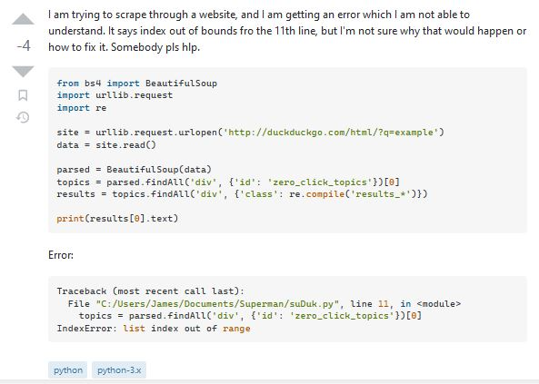

Obviously this is a general statement, and can’t always be true, but when it comes to online platforms, where you’re talking to people you don’t know, just saying “pls help” is just about the worst thing you could do. Obviously there are worse things, you don’t want to cuss out the people trying to help you, but just saying “Pls help” will get you absolutely nowhere.
“Please help.” is a huge step up, it goes from being extremely disrespectful to being respectful, but you’re still missing, well, all of it. The phrase can certainly be hidden somewhere within your request for help, but it is not sufficient enough to be a legitimate request.
So if we can’t just say “Please help,” what do we have to add? The first step to asking for help, unlike many things, is very easy to figure out. Simply put, you must state the error that you’re having. For the first part, you’d want to put something like “I’m getting an error,” or, “This isn’t working how I want.” Simple, right? All you have to do is say the general problem, you don’t even have to know the error code or the specific cause of your problem or anything.
Unfortunately, for most formal help discussions, that’s still not enough. How is anyone going to be able to help you if you just say “I’m getting an error, please help.” You’re getting an error with what? What kind of error is it? What language are you using? Is it even coding related? These are all questions that can come up from your request, and they are all things that no one wants to ask. There are two options if you post a question like that:
People will give snarkily ask you those questions from earlier, and then yell at you for being dumb and asking a stupid question with no context and bully you for the rest of your time on that website, or,
People simply won’t answer your question.
I don’t know if it’s just me, but I don’t think anyone asking for help wants either of those options.
So we know the problem, the first steps and saying “Please help me” isn’t enough. We also know that if we phrase our question like that, there are going to be lots of questions. So we can use that knowledge to enhance our request. If you know what someone’s question is going to be, answer it before they can ask it. If your request is “Please help me, my code isn’t running and I don’t know why, it’s getting an error.” There are bound to be lots and lots of questions. “What code?” “What error?” “What have you tried?” “What language?” “What OS?” are all popular questions that can all be guessed and are not at all specific to your exact question. If you are coding in C, your OS can be something that is easily overlooked, but situationally very important. The errors themselves can often tell people exactly what your problem is without even having to look at your code.
Sometimes, however, that’s still not enough. Let’s look at some examples to see what can go wrong.
The source. 
In this first example, as you can see, this person got 4 downvotes on their post. At first glance, it seems like it was formatted okay, giving code and error, and it seems like it followed the first few steps. However, it made a few very prominent mistakes.
Firstly, the person asking the question obviously did not spend very much time crafting the question, there are many spelling errors, and they even specifically used the phrase “pls hlp.”
Secondly, the question is something that can be found elsewhere.
Putting these two things together, it is evident that the person asking the question did not try his hardest to get help on this problem. He disrespected the people he was asking the question to, by not trying to fix the problem on his own, and by openly not trying to ask the question neatly.
The steps before are absolutely essential for any good question, but that’s not enough in some cases. If there are only 2 questions you can think of that people might ask, and you answer both of those and then post the question, sometimes it will get a good reception. In reality, this is because you’ve only answered two questions, you’ve not worked very hard on your question, and that peeves a lot of people on StackOverflow. Most people who answer questions on StackOverflow spend a lot of their time helping random people for almost no reward. This makes it so that if it seems to them like someone isn’t trying to get help at all, they won’t be happy.
The way to fix this is to just put in the effort into your question, before you ask, look around to see if there are any answers, exhaust every possible option you have before you go on stackoverflow to use someone else’s time.
Mixing all of these tactics together will undoubtedly allow you to put together a good question that will attract the attention that you need.